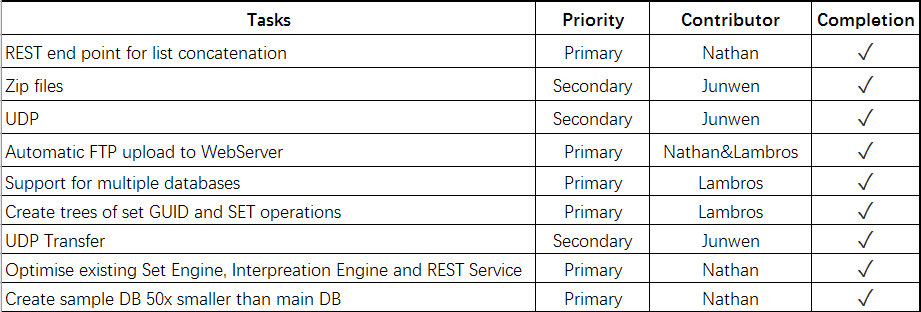

Summary
Challenges:
1. Read data from Azure database takes too long.
Incomplete features and bugs:
1. Querying not fast enough.
Work Package

Evaluation
Basically, this project is well-designed, expect for a little mess in the early period. In the first few weeks, it was a little hard to get contact with people from Capita and
also their sample database. In the first, we were in charge of data visualization part, but a few weeks later, we were told to swap the project with team 1.
Future Work
If we have another six months to development and improve, we will still look into set engine and interpretation engine to improve their efficiency. Since for now, based on our speed tests, it's still not that fast as we expected.